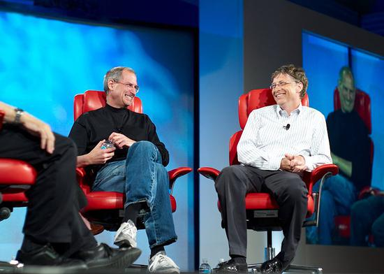

新浪美股讯 比尔·盖茨（Bill Gates）周末在访谈节目中表示，苹果公司的史蒂夫·乔布斯（Steve Jobs）是独一无二的，他有能力让一家“走上死亡之路”的公司变成世界上最有价值的公司——部分靠的是“施咒”。
盖茨说，“我就像一个小巫师，他施放法术时，我会看到人们被他迷住。但因为我是一个小巫师，所以咒语对我不起作用。”
盖茨在谈到这个他曾经的合作者和竞争对手时补充道，“我还从来没有遇到过任何一个人，在选用人才、激励人才方面，以及在拥有一种‘哦，这个很好，这个不好’的设计感方面，”能够与乔布斯匹敌。
盖茨说，即使当他失败时，其实他还是成功了。他引用了1988年推出的NeXT电脑的例子，那台电脑“完全失败了，简直是一团糟，然而他却还是迷住了那些人。”五年后NeXT电脑公司停止生产硬件，1996年被苹果公司收购。
盖茨有时把乔布斯形容为一个“混蛋”。他说，虽然领导者很容易“模仿史蒂夫的缺点”，“但他带来了一些令人难以置信的积极的东西，以及那种韧性。”
作为微软的联合创始人，盖茨反思了他在上世纪70年代创建的文化。盖茨说，成立之初，公司“有一群自我选择的人，他们大多是男性，我承认，没错，我们对彼此都很严厉。我觉得有时候这太过分了。”
盖茨现在是一位慈善家，身家估计为1070亿美元，盖茨说，他“没有那么疯狂地追求财富”。
不过，他承认自己在比尔和梅林达·盖茨基金会（Bill & Melinda Gates Foundation）有一种事必躬亲的微观管理倾向。该基金会的主要目标是在全球范围内减少极端贫困，并加强医疗保健。